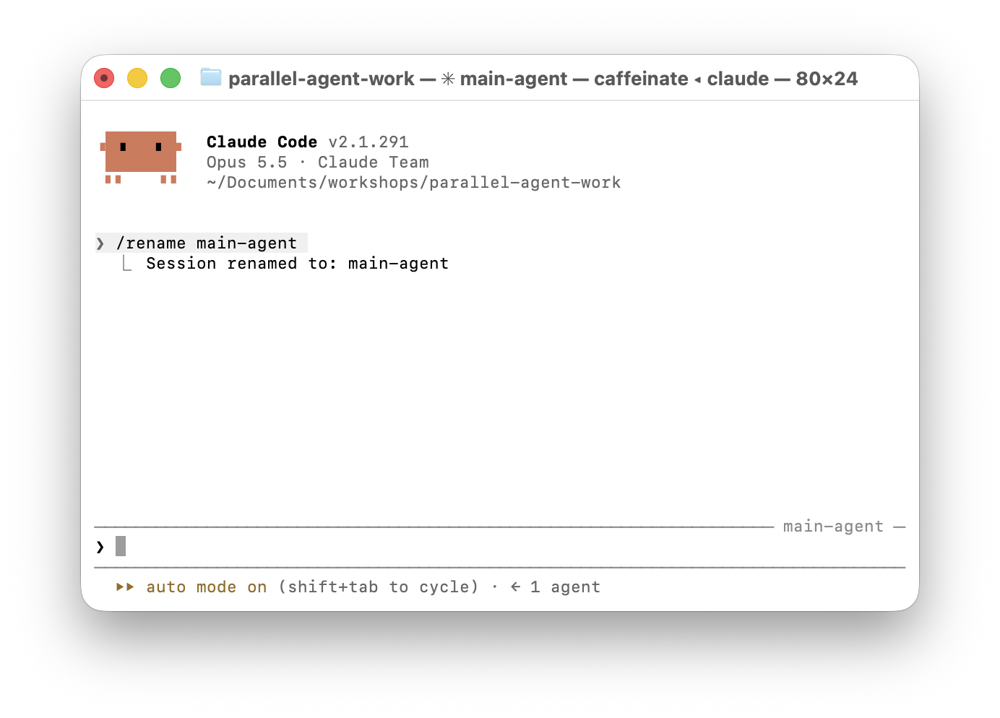
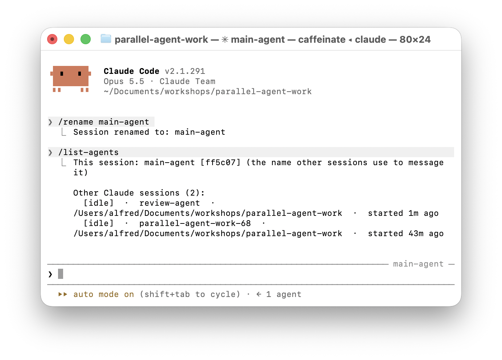
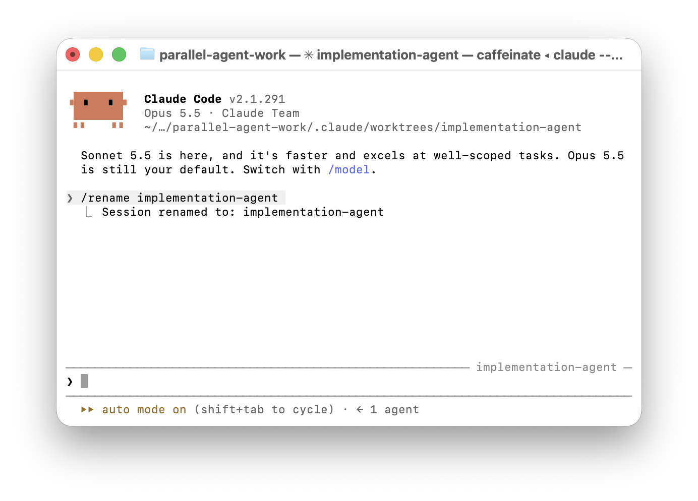

Three agents,
one repo.
Coordinate several Claude Code sessions from a single conversation — and preview their work side by side.
You talk to main.
Main talks to the rest.
Messages carry text — tasks, findings, status. Not code, and they never start new sessions.
Check your setup.
- 01Claude Code
2.1.224+on macOS / Linux / WSL 2 (2.1.234+on Windows) - 02Node.js
20.19+ - 03A terminal per session — you'll end up with four
claude --version
Name & message
Two sessions. One asks, the other answers.
Names are addresses.
A session finds another session by its name. Give every session a name, and main can reach it with an @-mention.
Same-machine messages go over local IPC — not through Anthropic's servers.
Start & name two sessions
In two terminals, in this project folder:
claude
Rename one in each session:
/rename main-agent
/rename review-agent
In main, check that review-agent shows up:
/list-agents
Two named sessions

Main can find review.
/list-agents shows this session's name and every other session it can message.
Other Claude sessions on your machine may show up too.

Ask for a briefing
Ask @review-agent to inspect the whole project and send you a concise overview: the app structure, important entry points, how data flows, the API, and the main npm scripts. Ask it not to edit any files. Once it replies, summarize the overview to me.
Watch main send, wait, receive — and report back. That's the whole loop.
Delegate & review
One agent builds in its own checkout. Another reviews it.
A worktree is a private checkout.
- 01Same Git repo, its own branch and folder
- 02Edits stay out of your main checkout while the agent works
- 03Lives in
.claude/worktrees/<name>
Start the implementer
In a new terminal in this project folder:
claude --worktree implementation-agent --name implementation-agent
Creates .claude/worktrees/implementation-agent on a new branch.
Keep main-agent and review-agent open.
A session in its own folder.
The path under the version points into .claude/worktrees/ — not your main checkout.

See it without running it.
Agents run a UI test that screenshots the front page to screenshots/front-page.png — inside their own worktree. They send you the path; you open the image.
You only need to do this once per machine:
npx playwright install chromium
Build → review → fix
Ask @implementation-agent to add a category filter to the article list in its worktree. Ask it to keep the change focused and, when finished, send you the worktree path, a short summary, whether npm run build succeeded, and the absolute path to screenshots/front-page.png after running npm run test:ui. When it reports back, ask @review-agent to review the implementation at that worktree path. Ask for critical correctness issues only. If it finds one, relay the specific issue to @implementation-agent and ask it to fix it. When the fix is ready, ask @review-agent for one focused re-review, then report the outcome to me with the screenshot path so I can see the result.
One pass, at most one repair. Code travels through Git — not messages.
Parallel previews
Two agents, two designs, both running at once.
Two worktrees.
One port 3001.
npm run dev — without Portless
npm run dev:portless
Portless gives each worktree a name.
- 01The URL comes from the worktree's branch:
https://worktree-implementation-agent.bg.localhost - 02A free local port assigned behind it
- 03Local HTTPS via a proxy on
:443— needssudoonce
Set up Portless once
In a separate terminal:
npm install -g portless
Start the HTTPS proxy — leave it running:
sudo portless proxy start --https
It may ask you to trust its local certificate the first time.
Add a second builder
In a new terminal in this project folder:
claude --worktree parallel-agent --name parallel-agent
In main, confirm all three others are listed:
/list-agents
This is the last manual setup. From here, only talk to main-agent.
Two designs, at once
Send these two tasks now; don't wait for one to finish before sending the other. @implementation-agent: In your worktree, create an editorial, image-led front-page treatment. Keep your changes on your branch. When it is ready, start `npm run dev:portless` in the background, run `BASE_URL=<your preview URL> npm run test:ui`, and send me the preview URL and the absolute path to screenshots/front-page.png. @parallel-agent: In your worktree, create a contrasting compact-headlines front-page treatment. Keep your changes on your branch. When it is ready, start `npm run dev:portless` in the background, run `BASE_URL=<your preview URL> npm run test:ui`, and send me the preview URL and the absolute path to screenshots/front-page.png. When both URLs arrive, ask @review-agent to open both previews, compare the two treatments, and verify each URL loads its assigned design and responds from `/api/health` and `/api/articles`. Have it report to you. If it finds a critical issue, send that issue to the relevant worker, wait for the fix and new URL, then request one focused re-review. Summarize the comparison and review to me, including both screenshot paths. Do not merge the branches.
Two designs, live, side by side.
Look at what they built.
Each agent saved a screenshot inside its own worktree. Open them and compare.
 No screenshot yet
No screenshot yet
 No screenshot yet
No screenshot yet
Links work when this file is opened from the project folder.